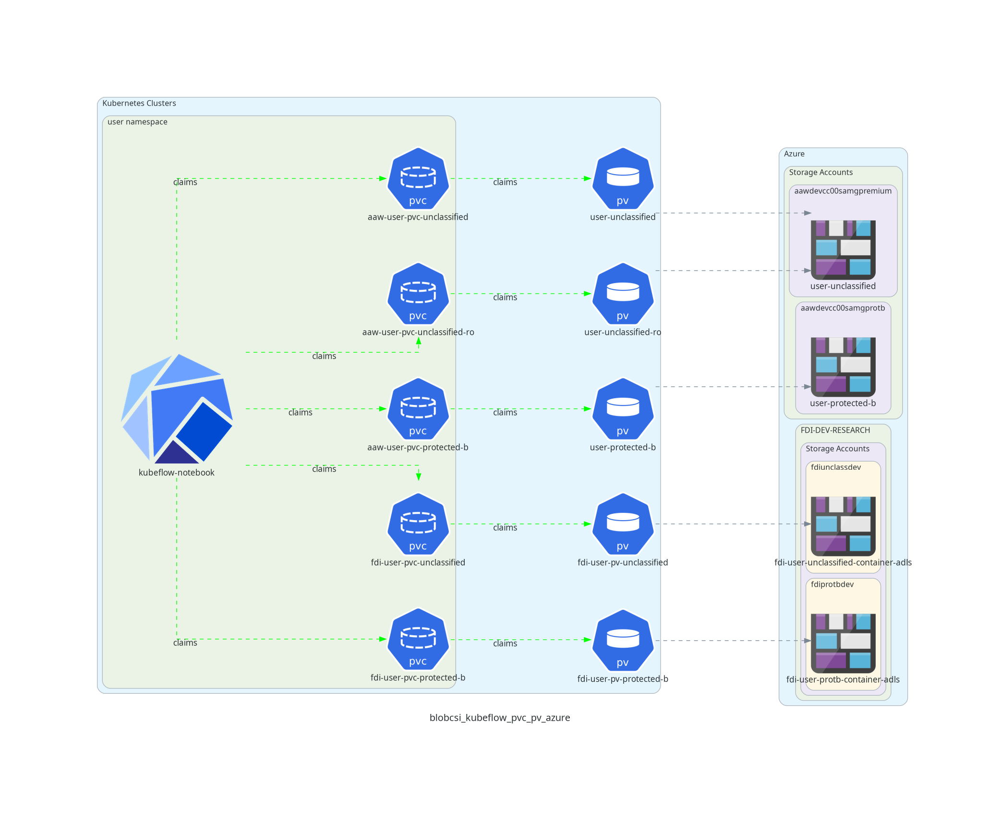
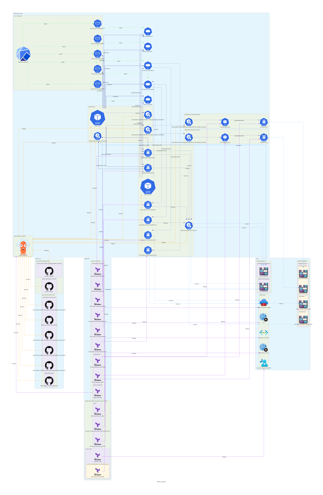

Overview¶
The blob-csi system is the replacement system for the minio storage solution in AAW.
In order to provide AAW users with access to Azure storage containers, we deploy a storage solution consisting of the following components:
- azure blob-csi-driver: responsible for mounting
PersistentVolumeresources to azure storage containers via blob-fuse - blob-csi-injector:
MutatingWebhookwhich is responsible for addingVolumesandVolumeMountsto pods containing thedata.statcan.gc.ca/inject-blob-volumeslabel. - blob-csi.go kubernetes controller:
Responsible for the provisioning of Azure storage containers,
PersistentVolumes andPersistentVolumeClaims per namespace for AAW users.
Feature Implementation¶
The blob-csi system allows users to gain access to Azure container storage at unclassified and protected-b classification levels. Currently, users can mount volumes manually as data-volumes in AAW's Kubeflow notebook creation workflow, but eventually auto-mounting of volumes will be supported.
Note that the figures depicted below are representative of the AAW development Kubernetes cluster. However; the implementation in
production is near identical, with the only difference being the use of the word dev being replaced with prod throughout the resources.
The data flow for how a kubeflow notebook will connect to backing storage at a high level is provided below.

In short, users request a data volume for use within their kubeflow notebook, the blob-csi-driver runs a csi-controller pod on each
node in the cluster, and each csi-controller pod mounts any volumes requested.
The blob-csi.go Kubernetes Controller¶
The blob-csi.go kubernetes controller is responsible
for the creation of PersistentVolume, PersistentVolumeClaim and azure storage containers per user namespace in AAW. The permissions lists are managed by Fair Data Infrastructure team (FDI).
AAW default volumes are configured here
and any change to the name field will result in the deletion and re-creation of PersistentVolume and PersistentVolumeClaim resources
to reconcile the change. There are two possible classifications for volumes: unclassified and protected-b. Notice that the
unclassified-ro classification is protected-b. This is so that users can view unclassified data within a protected-b pod (volume classifications are enforced by Gatekeeper upon creation of a notebook).
In order for the controller to determine which PersistentVolumes and PersistentVolumeClaims to create for FDI containers,
the controller queries unclassified and protected-b via a K8s ConfigMap in azure-blob-csi-system.tf, recieving a .json formatted response.
An example of the expected .json formatted response:
fdi-unclassified-internal.json: |
[
{
"bucketName": "aaw-pv-internal-un-testing",
"pvName": "test-iunc",
"subfolder": "",
"readers": ["alice, bob"],
"writers": ["alice, bob"],
"spn": "pv-internal-unclassified-dev-sp"
}
]
fdi-protected-b-internal.json: |
[
{
"bucketName": "aaw-pv-internal-pb-testing",
"pvName": "test-iprotb",
"subfolder": "",
"readers": ["alice, bob"],
"writers": ["alice, bob"],
"spn": "pv-internal-protected-b-dev-sp"
}
]
fdi-protected-b-external.json: |
[
{
"bucketName": "aaw-pv-external-pb-testing",
"pvName": "test-eprotb",
"subfolder": "",
"readers": ["alice, bob"],
"writers": ["alice, bob"],
"spn": "pv-external-protected-b-dev-sp"
}
]
fdi-unclassified-external.json: |
[
{
"bucketName": "aaw-pv-external-un-testing",
"pvName": "test-eunc",
"subfolder": "",
"readers": ["alice, bob"],
"writers": ["alice, bob"],
"spn": "pv-external-unclassified-dev-sp"
}
]
PersistentVolume and PersistentVolumeClaim for both alice and bob, however
alice would have ReadOnlyMany permissions, and bob would have ReadWriteMany permissions. There is also an option to mount subfolders
to a user's container. bucketName is the name of the container created in the storage account. pvName is the pre-fix of the volume in the format of projectName-internal/external-unclassified/protected
For every FDI project container request there needs to be a Service Principal created. AAW will create
an App Registration via Cloud Jira (Operational Support). AAW will also create the client secret in the azure-blob-csi-system ns via Terraform in azure-blob-csi-system.tf using appropriate naming convention SPN + "-secret"
FDI Common Storage has 4 storage accounts: DEV - stndmfdidpb01sa (external protected-b) - stndmfdidun01sa (external unclassified) - stndmfdiipb01sa (internal protected-b) - stndmfdiiun01sa (internal unclassified)
PROD - stpdmfdidpb01sa (external protected-b) - stpdmfdidun01sa (external unclassified) - stpdmfdiipb01sa (internal protected-b) - stpdmfdiiun01sa (internal unclassified) External users should not have access to mount/view internal volumes to their notebooks.
How to create a new FDI container?¶
- AAW submits a Cloud JIRA (Cloud Operations) to create a new App Registration with the appropriate naming convention (aaw-PROJECTACRONYM-prod-sp) A new Service Principal is only required if this is for a new project. If an existing project requires an additional volume, the existing Service Prinicpal can be used.
- Request FDI to create the container in the appropriate Azure Storage account (internal/external - unclassified/protected-b). FDI will add the SP to the container's ACL.
- AAW must create the client id and client secret for the Service Prinicpal and persist it as a Kubernetes Secret in the
azure-blob-csi-system.tf. It creates the client id as a secret in thedaaas-systemnamespace and the client secret in theazure-blob-csi-systemnamespace. - AAW will then update the
fdi-aaw-configurationconfig map inazure-blob-csi-system.tf.BucketNameis the name of the container created in the storage account.pvNameis the name of the persistentVolume. Following naming convention of:ProjectName-iunc(internal unclassified),ProjectName-eprotb(external protected-b)readers/writersnamespaces who require access to the volumesspnname of the Service Principal that was created through the Cloud JIRAsubfolderif a project requires sub-folder mounting then this folder must be created before provisioning the volumes. If sub-folder is not required, leave the name as empty string - AAW will add the SP to the appropriate AD Group. Depending on the container created and environment the SP will be added to either:
AAW-PROD-External-Unclassified-SPs,AAW-PROD-Internal-Unclassified-SPs,AAW-PROD-External-Protected-B-SPs,AAW-PROD-Internal-Unclassified-SPsNote: For debugging there are test containers created in all Prod and Dev storage accounts for future development and testing.
Step by Step Instructions¶
To create an FDI bucket/container, edit azure-blob-csi-system.tf found in:
- https://gitlab.k8s.cloud.statcan.ca/cloudnative/aaw/daaas-infrastructure/aaw-prod-cc-00/-/blob/main/azure-blob-csi-system.tf
You'll need to add variables to variables.tf:
- https://gitlab.k8s.cloud.statcan.ca/cloudnative/aaw/daaas-infrastructure/aaw-prod-cc-00/-/blob/main/variables.tf
1. Update azure-blob-csi-system.tf¶
a. Define client id variable:¶
<acronym> means your project's acronym, typically just one of the French or English acronyms is used.
Add the following to either resource "kubernetes_secret" "azure_blob_csi_fdi_protected_b" or resource "kubernetes_secret" "azure_blob_csi_fdi_unclassified":
AAW_<ACRONYM>_PROD_SP_AZURE_STORAGE_SPN_CLIENTID = var.aaw_<acronym>_prod_sp_clientid
b. Add secrets clause:¶
Add the following to the section below ## Start, ~Line 200):
resource "kubernetes_secret" "aaw-<acronym>-prod-sp-secret" {
metadata {
name = "aaw-<acronym>-prod-sp-secret"
namespace = kubernetes_namespace.azure_blob_csi_system.id
}
data = {
azurestoragespnclientsecret = var.aaw_<acronym>_prod_sp_secret
}
}
c. Add bucket info:¶
Add the following to resource "kubectl_manifest" "fdi-aaw-configuration-data", in one of the following, depending on the classification of the bucket:
fdi-protected-b-external.json: |orfdi-unclassified-external.json: |orfdi-protected-b-internal.json: |orfdi-unclassified-internal.json: |
{
"bucketName": "<should-be-provided-for-you>",
"pvName": "<acronym>-eprotb",
"subfolder": "",
"readers": ["<name-of-kuebeflow-profile>"],
"writers": ["<name-of-kuebeflow-profile>"],
"spn": "aaw-<acronym>-prod-sp"
}
Transit Containers¶
If the storage solution requires transit containers, you'll want to add this as well. Not all solutions require this.
{
"bucketName": "<should-be-provided-for-you>-transit",
"pvName": "<acronym>-inbox-eprotb",
"subfolder": "from-de",
"readers": ["<name-of-kuebeflow-profile>"],
"writers": ["<name-of-kuebeflow-profile>"],
"spn": "aaw-<acronym>-prod-sp"
},
{
"bucketName": "<should-be-provided-for-you>-transit",
"pvName": "<acronym>-outbox-eprotb",
"subfolder": "to-vers",
"readers": ["<name-of-kuebeflow-profile>"],
"writers": ["<name-of-kuebeflow-profile>"],
"spn": "aaw-<acronym>-prod-sp"
}
Info¶
bucketName:should be given to you by the person requesting the bucket.
pvName:just use the template, filling in with whatever is appropriate.
subfolder:use the example below unless otherwise specified.
readers:use the kubeflow profile name for this
writers:use the kubeflow profile name for this
spn:this has to be obtained by you by sending a Jira ticket to the Cloud Team. See below for an example SPN request.
Example Cloud Ticket¶
To obtain the SPN, send a Jira ticket to the Cloud Team, follow the template below:
Hi,
Can I get a service principle named aaw-\<acronym>-prod-sp created please?
The owners should be:
- relevant.person.one@cloud.statcan.ca
- relevant.person.two@cloud.statcan.ca
More info: https://jirab.statcan.ca/browse/?????-????
Thanks!
2. Add variables to variables.tf:¶
variable "aaw_<acronym>_prod_sp_secret" {
description = "Protected-b <acronym> service principal client secret."
sensitive = true
}
variable "aaw_<acronym>_prod_sp_clientid" {
description = "Protected-b <acronym> service principal client id."
sensitive = true
}
3. How to create necessary secrets¶
Follow the steps below to create the necessary secrets in the Azure Portal, then add the secrets variable to the internal Gitlab CI/CD runner.
- Login to Azure Portal
- Go to Microsoft Entra ID
- Go to App registrations
- Go to All Applications
- Search for the "App" you are looking for, usually "aaw-\<acronym>-prod-sp".
- Take note of the "Application (client) ID" found on the Overview page for that particular App registration.
- With the App selected, go to Certificates & secrets, create the secret, give it the name "key".
- Send the Application (client) ID to the appropriate JIRA page.
- Add the secret to the Gitlab CI/CD settings.
Architecture Design¶
For more context on the blob-csi system as a whole (from deployment of infrastructure to azure containers), see the attached diagram below. In addition, refer to the below legend for line types and colours.
- Line types:
- Solid lines follow the paths of the deployment or provisioning of resources.
- Dashed lines outline the paths for connectivity.
- Line Colours:
- Navy blue lines are used for edges connecting nodes within the kubernetes cluster.
- Light green lines are assiciated with kubeflow from a users perspective.
- Yellow lines are associated with argocd.
- Purple lines are associated with terraform.
- Light blue lines are associated with edges that connect from nodes anywhere in the diagram to an azure resource.
